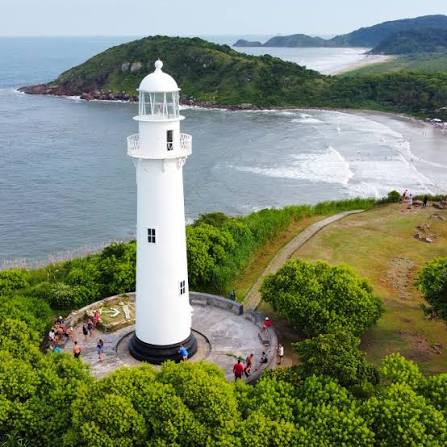

Do litoral às cataratas, o Paraná cabe numa viagem.
Roteiros, praias, parques e cidades para quem quer conhecer o sul do Brasil com calma.

Cataratas do Iguaçu
Uma das Sete Maravilhas da Natureza.
Parque de Vila Velha
Formações de arenito esculpidas pelo tempo.

Ilha do Mel
Trilhas, praias e pôr do sol sem carros.